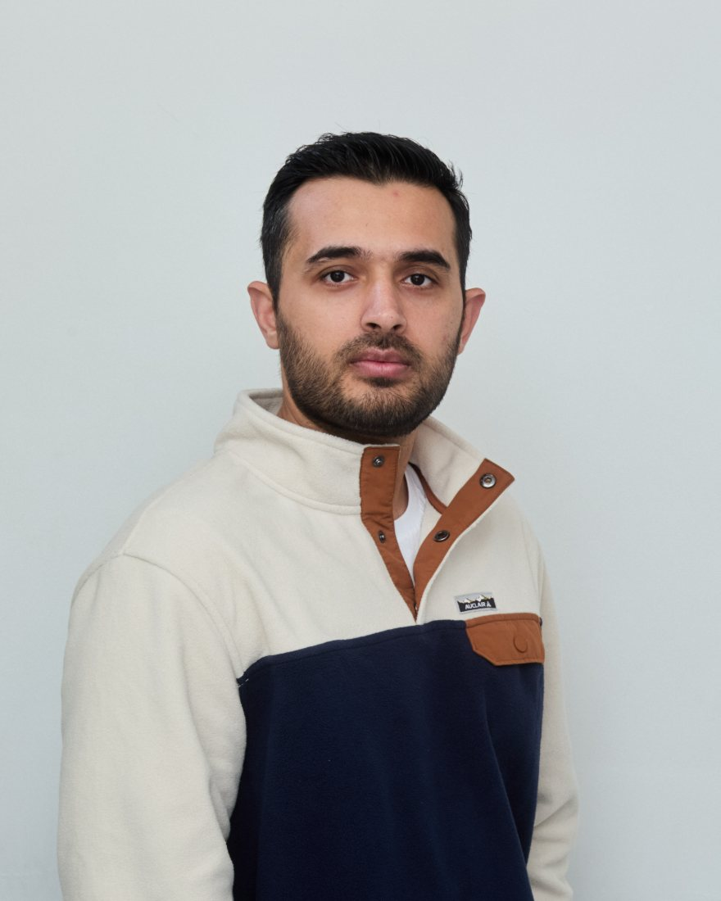

Senior Engineering Manager
BMO
Portfolio · @thelangdatyagi
Senior Engineering Manager at BMO and Founder of OP Techies Limited. I build enterprise-grade systems by day, and broadcast overlays, websites and odd creative ideas the rest of the time.

Selected work
OBS browser sources · 1920×1080
A complete set of chess-streaming scenes: in game, starting soon, be right back and stream ending, in three hand-tuned themes.
Live football talk show · OBS + obs-websocket
A broadcast overlay and control desk for a two-presenter football show, built so a phone-sized YouTube viewer can still read every graphic.
Live at heldtime.ca · Ontario, Canada
The website for an Ontario psychotherapy clinic: calm, fast and found on search, with the foundations laid for a full client and therapist platform.
Held Time will hold personal health information about therapy clients, so privacy law sets the architecture from the first line of code rather than being checked at the end.
Ontario's Personal Health Information Protection Act. Health data stays in Canada, every access is logged, and consent is recorded explicitly.
Canada's federal privacy law for personal information, covering how it's collected, used and disclosed.
The backend is planned on HIPAA-eligible cloud services, which a signed Business Associate Agreement can cover once US clients are added.
Card payments run through a PCI DSS–compliant payment processor. Card numbers never touch Held Time's systems.
The highest accessibility level, required for every page and future feature.
The site live today is the public phase (home, about and blog) and holds no health information. These rules govern accounts, booking and payments as they're built. There is no formal PHIPA certification: compliance comes from how the system is built and run, with a privacy lawyer to review the final handling procedures.
About
I'm Vishwesh Joshi, known on GitHub as thelangdatyagi. I'm a Senior Engineering Manager at BMO and the Founder of OP Techies Limited.
The work on this page is the hands-on side: things designed and built end to end, from pixel-level broadcast graphics and OBS automation to a clinic website built to grow into a platform.
BMO
OP Techies Limited
What we can build together
Platforms, integrations and systems built to be audited, scaled and run by teams.
Fast, search-friendly sites, from a simple brochure page to a product. WCAG AA as standard, AAA when your audience needs it.
OBS scenes, live data, automation and a control panel your producer will actually enjoy.
Something that doesn't fit a category yet. Those are often the best ones.
Accessibility
The people using a website might be on a screen reader, a keyboard, a cracked phone in bright sun, or having the worst day of their year. Accessibility is part of the build from the first commit, measured against the Web Content Accessibility Guidelines (WCAG).
The highest level, and a hard requirement for every page and every future feature. Many of the clinic's clients will arrive in distress, using assistive technology or an older device.
h1 per page with no skipped heading levels, meaningful alt text.The portfolio you're reading, motion and all, is built to meet AA.
Most viewers watch streams on a phone, where a 1080p frame shrinks to about a fifth of its size.
Contact
Interested in buying any of these, partnering on a business, or working with me on an enterprise project, a simple website, a stream overlay or your own creative idea? Reach out on LinkedIn.
Message me on LinkedIn